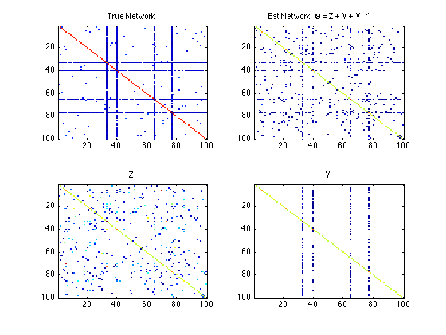

Learning graphical models with hubs - hglasso
Implementation of Hub graphical lasso in Matlab for Gaussian network case.
This is an implementation of the paper 'Learning Graphical Models With Hubs' in Matlab. Link
Run sample_program.m to see how a demo works.
Sample result for inferring a network of 100 variables using 50 data samples. The network contains 4 hubs.
Original Network Information:
n: 50 p: 100
True Hub nodes are : 40 65 33 77
sparsity: 0.99 hub sparsity: 0.10 hub number: 4
Parameters set as :
lamda1: 0.30 lamda2: 0.30 lamda3: 1.50
Result :
Estimated Hub nodes : 33 40 65 77
Total true edges: 407
Total estimated edges: 396
Estimated correct edges: 201
Prop of correctly estimated hub edges: 0.542936
Prop of correctly estimated hub nodes: 1.000000
Sum of squared errors: 36.696998
